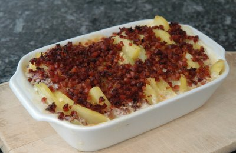

| Zutaten für 4 Personen: | |
| 500 g | Kohlrabi |
| 500 g | Kartoffeln |
| Hühnerbouillon | |
| 1 | Zwiebel |
| 400 g | Speckwürfel |
| Butter | |
| 2 dl | Rahm |
| Knoblauch | |
| 3 | Nelken gerieben |
Kohlrabi und Kartoffeln in 1 mm dicke Scheiben schneiden und beide separat in Hühnerbouillon knapp weichkochen und abtropfen lassen.
Fein gehackte Zwiebel und Speckwürfel in heisser Butter glasig dünsten.
Das Gemüse in eine feuerfeste, ausgebutterte Schüssel einschichten.
Rahm, gepresste Knoblauchzehen und geriebene Nelken (eventuell Nelkenpulver) verrühren und über die Kohlrabi und die Kartoffeln verteilen. Die Zwiebeln und die Speckwürfel darauf verteilen.
Im Ofen bei 175°C für 30 Minuten überbacken.
Herbert Eigenmann, Code: KOG
Gelang am 26.1.2008 So-So. Ich habe nur die halbe Menge Zutaten verwendet. Das war immer noch etwas viel für die kleine Gratinform. Vielleicht habe ich die Scheiben zu eng geschichtet, so dass der Rahm nicht an die Kartoffeln kam? Oder die Sorte Victoria bindet nicht gerne mit dem Rahm? Mit der Sorte Agria wäre das sicher nicht passiert. Auf alle Fälle hat der Rahm nicht richtig gebunden. Geschmeckt hat es eigentlich schon recht. RE
Andre Wyss aus Härkingen schreibt am 4. Juli 2008: Sie schreiben, der Rahm hätte sich nicht mit den Kartoffeln gebunden. Ich denke, da Sie die Kartoffeln vorgekocht haben, ist die ganze Stärke die es zum Binden braucht, im Kochwasser! Bei meinem Kartoffelgratin schneide ich die Kartoffeln knapp 2mm. Ich baue den Gratin schichtweise auf: Wenig Rahm auf Gratinplattenboden. Mit Salz Pfeffermühle und Muskat würzen. (eventuell Knoblauch). Rohe Kartoffel direkt in die Platte raffeln. Rahm darüber giessen und würzen. Das ganze etwa 3mal wiederholen. So habe ich die Gewähr, dass wirklich alle Kartoffeln mit Rahm in Berührung kommen und alles gut bindet. (Man kann auch Halbrahm nehmen. Gerinnt zwar leicht, aber durchaus auch empfehlenswert, da etwas leichter.)
@LINKBACK_TAG@ @WAKELOCK@